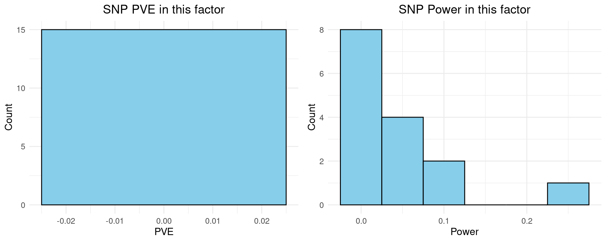

Last updated: 2025-10-08
Checks: 6 1
Knit directory: factor_analysis_new/
This reproducible R Markdown analysis was created with workflowr (version 1.7.1). The Checks tab describes the reproducibility checks that were applied when the results were created. The Past versions tab lists the development history.
The R Markdown file has unstaged changes. To know which version of the R Markdown file created these results, you’ll want to first commit it to the Git repo. If you’re still working on the analysis, you can ignore this warning. When you’re finished, you can run wflow_publish to commit the R Markdown file and build the HTML.
Great job! The global environment was empty. Objects defined in the global environment can affect the analysis in your R Markdown file in unknown ways. For reproduciblity it’s best to always run the code in an empty environment.
The command set.seed(20221201) was run prior to running the code in the R Markdown file. Setting a seed ensures that any results that rely on randomness, e.g. subsampling or permutations, are reproducible.
Great job! Recording the operating system, R version, and package versions is critical for reproducibility.
Nice! There were no cached chunks for this analysis, so you can be confident that you successfully produced the results during this run.
Great job! Using relative paths to the files within your workflowr project makes it easier to run your code on other machines.
Great! You are using Git for version control. Tracking code development and connecting the code version to the results is critical for reproducibility.
The results in this page were generated with repository version c2a157f. See the Past versions tab to see a history of the changes made to the R Markdown and HTML files.
Note that you need to be careful to ensure that all relevant files for the analysis have been committed to Git prior to generating the results (you can use wflow_publish or wflow_git_commit). workflowr only checks the R Markdown file, but you know if there are other scripts or data files that it depends on. Below is the status of the Git repository when the results were generated:
Unstaged changes:
Modified: analysis/revision_power.Rmd
Note that any generated files, e.g. HTML, png, CSS, etc., are not included in this status report because it is ok for generated content to have uncommitted changes.
These are the previous versions of the repository in which changes were made to the R Markdown (analysis/revision_power.Rmd) and HTML (docs/revision_power.html) files. If you’ve configured a remote Git repository (see ?wflow_git_remote), click on the hyperlinks in the table below to view the files as they were in that past version.
| File | Version | Author | Date | Message |
|---|---|---|---|---|
| Rmd | c2a157f | XSun | 2025-10-08 | update |
| html | c2a157f | XSun | 2025-10-08 | update |
| Rmd | aa6fd63 | XSun | 2025-10-08 | update |
| html | aa6fd63 | XSun | 2025-10-08 | update |
library(ggplot2)
library(scales)
library(gridExtra)
# Function to compute power for a given N and PVE (two-sided test)
power_snp_pthres <- function(N, PVE, alpha = 5e-8) {
z_thr <- qnorm(1 - alpha/2)
mu <- sqrt(N * PVE)
power <- 1 - pnorm(z_thr - mu) + pnorm(-z_thr - mu)
return(power)
}
# Function to compute power using a z-score threshold directly
power_snp_zthres <- function(N, PVE, z_threshold = 3) {
mu <- sqrt(N * PVE)
power <- 1 - pnorm(z_threshold - mu) + pnorm(-z_threshold - mu)
return(power)
}
min_sample_size <- function(PVE, z_threshold, target_power = 0.8) {
z_power <- qnorm(target_power)
N <- ((z_threshold + z_power)^2) / PVE
return(ceiling(N)) # round up to nearest integer
}Power analysis: difficult to do with ECT. Instead, the main bottleneck is the power of detecting variant-factor association. Do the power analysis on eQTLs: same as standard eQTL analysis, power vs. sample size, at different effect sizes. See the notes: https://www.overleaf.com/read/pqwqvhthnvng#3d443f
From the notes, we have
\[ z = \sqrt{N \cdot \text{PVE}}, \] where \(N\) is the sample size.
\[ \hat{z} | \text{PVE} \sim N(\sqrt{N \cdot \text{PVE}}, 1) \]
where the PVE of a SNP is simply \({z}^2 / N\). The estimated PVE is given by \(\hat{z}^2 / N\).
For a two-sided test at significance level \(\alpha\), we reject the null hypothesis if \(|\hat{z}| > z_{1-\alpha/2}\), where \(z_{1-\alpha/2}\) is the \((1-\alpha/2)\)-quantile of the standard normal distribution.
Hence, the statistical power is: \[ \text{Power} = P(|\hat{z}| > z_{1-\alpha/2} \mid \text{PVE}) = 1 - \Phi\big(z_{1-\alpha/2} - \sqrt{N \cdot \text{PVE}}\big) + \Phi\big(-z_{1-\alpha/2} - \sqrt{N \cdot \text{PVE}}\big), \] where \(\Phi(\cdot)\) denotes the cumulative distribution function of the standard normal distribution.
# Set range of sample sizes and PVEs
N_seq <- seq(100, 1e4, by = 1e2) # sample sizes
PVE_list <- c(1e-4, 1e-3, 1e-2, 0.1, 0.5) # 0.01% to 1%
# Compute power for each combination
power_df <- expand.grid(N = N_seq, PVE = PVE_list)
# power_df$Power <- mapply(power_snp_pthres, N = power_df$N, PVE = power_df$PVE)
#
# ggplot(power_df, aes(x = N, y = Power, color = as.factor(PVE))) +
# geom_line(size = 1) +
# scale_y_continuous(limits = c(0, 1), name = "Power") +
# scale_x_continuous(name = "Sample size (N)", labels = scales::comma) +
# scale_color_brewer(palette = "Set1", name = "PVE") +
# ggtitle("Power vs Sample Size for Different SNP PVEs",
# subtitle = expression(alpha == 5 %*% 10^{-8})) +
# theme_minimal(base_size = 14) +
# theme(legend.position = "right")
z_thr <- 3
power_df$Power <- mapply(power_snp_zthres,
N = power_df$N,
PVE = power_df$PVE,
MoreArgs = list(z_threshold = z_thr))
# Plot
p1 <- ggplot(power_df, aes(x = N, y = Power, color = as.factor(PVE))) +
geom_line(size = 1) +
scale_y_continuous(limits = c(0, 1), name = "Power") +
scale_x_continuous(name = "Sample size", labels = comma) +
scale_color_brewer(palette = "Set1", name = "PVE") +
ggtitle("",
subtitle = paste0("z-threshold = ", z_thr)) +
theme_minimal(base_size = 14) +
theme(legend.position = "right")Warning: Using `size` aesthetic for lines was deprecated in ggplot2 3.4.0.
ℹ Please use `linewidth` instead.
This warning is displayed once every 8 hours.
Call `lifecycle::last_lifecycle_warnings()` to see where this warning was
generated.z_thr <- 5
power_df$Power <- mapply(power_snp_zthres,
N = power_df$N,
PVE = power_df$PVE,
MoreArgs = list(z_threshold = z_thr))
# Plot
p2 <- ggplot(power_df, aes(x = N, y = Power, color = as.factor(PVE))) +
geom_line(size = 1) +
scale_y_continuous(limits = c(0, 1), name = "Power") +
scale_x_continuous(name = "Sample size", labels = comma) +
scale_color_brewer(palette = "Set1", name = "PVE") +
ggtitle("",
subtitle = paste0("z-threshold = ", z_thr)) +
theme_minimal(base_size = 14) +
theme(legend.position = "right")
grid.arrange(p1, p2, ncol = 2, top ="Power vs Sample Size for Different SNP PVEs")
| Version | Author | Date |
|---|---|---|
| c2a157f | XSun | 2025-10-08 |
dat_all <- readRDS("/project/xinhe/xsun/pathway_factor/analysis/1.ECT_v2/factor_assoc_res/B_cell-graves-ebi-a-GCST90018627_facassoc.RDS")
df <- dat_all[[1]]
cat("One example for QTL summary stats")One example for QTL summary statsDT::datatable(df,caption = htmltools::tags$caption( style = 'caption-side: left; text-align: left; color:black; font-size:150% ;','An example of factor-QTL summary stats'),options = list(pageLength = 10) )From the derivation, PVE by a single SNP is:
\[ \text{PVE} \approx \frac{\hat{z}^2}{N} \]
In R, this can be computed as:
df$PVE <- (df$STAT)^2 / df$NMISS
# Set z-threshold (two-sided, alpha = 5e-8)
#z_thr <- qnorm(1 - 5e-8 / 2)
z_thr <- 3
df$PVE <- (df$STAT)^2 / df$NMISS
# Compute power for each SNP
df$Power <- mapply(power_snp_zthres, N = df$NMISS, PVE = df$PVE, z_threshold = z_thr)
DT::datatable(df,caption = htmltools::tags$caption( style = 'caption-side: left; text-align: left; color:black; font-size:150% ;','An example of factor-QTL summary stats, PVE and power added'),options = list(pageLength = 10) )p1 <- ggplot(df, aes(x = PVE)) +
geom_histogram(binwidth = 0.05, # adjust bin width as needed
color = "black", # border color
fill = "skyblue") + # fill color
labs(title = "SNP PVE in this factor",
x = "PVE",
y = "Count") +
theme_minimal() +
theme(
text = element_text(size = 12),
plot.title = element_text(hjust = 0.5)
)
p2 <- ggplot(df, aes(x = Power)) +
geom_histogram(binwidth = 0.05, # adjust bin width as needed
color = "black", # border color
fill = "skyblue") + # fill color
labs(title = "SNP Power in this factor",
x = "Power",
y = "Count") +
theme_minimal() +
theme(
text = element_text(size = 12),
plot.title = element_text(hjust = 0.5)
)
grid.arrange(p1, p2, ncol = 2)
| Version | Author | Date |
|---|---|---|
| c2a157f | XSun | 2025-10-08 |
Since the QTLs of the factor are independent, we can simply sum the PVE of each SNP to obtain the factor-level PVE:
\[ \text{PVE}_{\text{factor}} = \sum_i \text{PVE}_i \]
The power for the factor can then be computed using the same formula as for a single SNP:
\[ \text{Power}_{\text{factor}} = 1 - \Phi\Big(z_{\text{thr}} - \sqrt{N \cdot \text{PVE}_{\text{factor}}}\Big) + \Phi\Big(-z_{\text{thr}} - \sqrt{N \cdot \text{PVE}_{\text{factor}}}\Big) \]
Here, \(N\) is the sample size and \(z_{\text{thr}}\) is the chosen z-score threshold.
PVE_factor <- sum(df$PVE)
power_factor <- power_snp_zthres(N = df$NMISS[1], # or your desired sample size
PVE = PVE_factor,
z_threshold = z_thr)
print(paste0("the power of the factor is ", round(power_factor,digits = 4)))[1] "the power of the factor is 0.9261"To compute the minimal sample size \(N\) required to achieve a target power, we can approximate the power formula by ignoring the small second term:
\[ \text{Power} \approx 1 - \Phi\left(z_{\text{thr}} - \sqrt{N \cdot \text{PVE}}\right) \]
Solving for \(N\), we obtain:
\[ \sqrt{N \cdot \text{PVE}} = z_{\text{thr}} + z_{\text{power}} \]
\[ \boxed{N = \frac{(z_{\text{thr}} + z_{\text{power}})^2}{\text{PVE}}} \]
where \(z_{\text{power}} = \Phi^{-1}(\text{target power})\).
tgt_power <- 0.8
N_min_factor <- min_sample_size(PVE = PVE_factor,
z_threshold = z_thr,
target_power = tgt_power)
print(paste0("Minimal sample size for target power ", tgt_power, " is ", N_min_factor))[1] "Minimal sample size for target power 0.8 is 206"tgt_power <- 0.9
N_min_factor <- min_sample_size(PVE = PVE_factor,
z_threshold = z_thr,
target_power = tgt_power)
print(paste0("Minimal sample size for target power ", tgt_power, " is ", N_min_factor))[1] "Minimal sample size for target power 0.9 is 256"tgt_power <- 0.7
N_min_factor <- min_sample_size(PVE = PVE_factor,
z_threshold = z_thr,
target_power = tgt_power)
print(paste0("Minimal sample size for target power ", tgt_power, " is ", N_min_factor))[1] "Minimal sample size for target power 0.7 is 174"
sessionInfo()R version 4.2.0 (2022-04-22)
Platform: x86_64-pc-linux-gnu (64-bit)
Running under: Red Hat Enterprise Linux 8.4 (Ootpa)
Matrix products: default
BLAS/LAPACK: /software/openblas-0.3.13-el8-x86_64/lib/libopenblas_skylakexp-r0.3.13.so
locale:
[1] LC_CTYPE=en_US.UTF-8 LC_NUMERIC=C
[3] LC_TIME=en_US.UTF-8 LC_COLLATE=en_US.UTF-8
[5] LC_MONETARY=en_US.UTF-8 LC_MESSAGES=en_US.UTF-8
[7] LC_PAPER=en_US.UTF-8 LC_NAME=C
[9] LC_ADDRESS=C LC_TELEPHONE=C
[11] LC_MEASUREMENT=en_US.UTF-8 LC_IDENTIFICATION=C
attached base packages:
[1] stats graphics grDevices utils datasets methods base
other attached packages:
[1] gridExtra_2.3 scales_1.2.0 ggplot2_3.4.2
loaded via a namespace (and not attached):
[1] Rcpp_1.0.14 highr_0.9 RColorBrewer_1.1-3 pillar_1.9.0
[5] compiler_4.2.0 bslib_0.3.1 later_1.3.0 jquerylib_0.1.4
[9] git2r_0.30.1 workflowr_1.7.1 tools_4.2.0 digest_0.6.29
[13] jsonlite_1.8.9 evaluate_0.15 lifecycle_1.0.4 tibble_3.2.1
[17] gtable_0.3.0 pkgconfig_2.0.3 rlang_1.1.2 cli_3.6.2
[21] rstudioapi_0.14 crosstalk_1.2.0 yaml_2.3.5 xfun_0.38
[25] fastmap_1.1.0 withr_2.5.0 dplyr_1.1.2 stringr_1.5.0
[29] knitr_1.42 htmlwidgets_1.6.2 generics_0.1.3 fs_1.5.2
[33] vctrs_0.6.1 sass_0.4.1 DT_0.22 tidyselect_1.2.0
[37] rprojroot_2.0.3 grid_4.2.0 glue_1.6.2 R6_2.5.1
[41] fansi_1.0.3 rmarkdown_2.21 farver_2.1.0 magrittr_2.0.3
[45] whisker_0.4 ellipsis_0.3.2 promises_1.2.0.1 htmltools_0.5.7
[49] colorspace_2.0-3 httpuv_1.6.5 labeling_0.4.2 utf8_1.2.2
[53] stringi_1.7.6 munsell_0.5.0 crayon_1.5.1